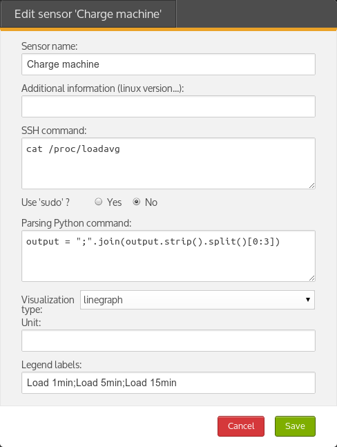

Contents
- What is Skwissh ?
- Where can I try it ?
- How do I install it ?
- How do I add my own sensors ?
- Important warning
- Screenshots
- Credits
- Contact
Travis Continuous Integration status
What is Skwissh ?
Skwissh is a Django application for remotely monitoring servers using SSH.
It uses Python Fabric to launch SSH commands (called sensors) on your servers, get the output, and store the aggregated values into a Django database.
The Skwissh Django application is able to display nice charts (line, pie or text) with aggregated measures.
Where can I try it ?
You can test our demo site, displaying some sample servers and sensors. Just connect with test / test credentials.
How do I install it ?
First you will need a Django project, check out Django documentation to learn how to achieve this. I strongly recommend using virtualenv while installing Python packages.
Once your Django project is up and configured, you can install Skwissh with the following command :
$ pip install django-skwisshYou can now add skwissh and kronos to your Django project INSTALLED_APPS :
INSTALLED_APPS = (
...
'kronos',
'skwissh',
)Add Skwissh to your urls.py :
# Skwissh
url(r'^skwissh/', include('skwissh.urls')),Synchronize your database (this command will load defaut sensors through fixtures and also '127.0.0.1' as your first server):
python manage.py syncdbSkwissh needs some tasks to run in the background, using crontab mechanism. You can install Skwissh tasks magically (thanks to 'django-kronos') with the following command :
python manage.py installtaskscrontab should have been set automatically, you can check that 4 crontab jobs have been configured :
crontab -l(optional) If you want to activate i18n (French & English currently supported), follow the next instructions. In your project settings.py, add the Django LocaleMiddleware and set the LANGUAGES variable:
MIDDLEWARE_CLASSES = (
...
'django.middleware.locale.LocaleMiddleware',
...
)
LANGUAGES = (
('fr', 'Français'),
('en', 'English'),
)You're ready to go. Skwissh is ready to monitor. In fact, it has even started to do so !
You can now connect to the application to start customize your sensors and add more servers.
How do I add my own sensors ?
Skwissh sensors are easy, once you know what they should return.
A sensor is mainly composed of a SSH command and a Python parsing command.
As you can easily understand what the SSH command is made for, the Python command is here to help parsing the output and return a good syntax. Measure output expected syntax is mostly comparable to CSV syntax (semicolon separator). This CSV syntax is expected for linechart and piechart sensors.
Text sensors
For text sensors, you don't need to parse the SSH command output (if you want the raw text output from your shell command). So you can execute your SSH command, and let the Python parsing 'output = output'.
Linechart and Piechart sensors
Let's have an example with a load averages sensor, displayed as linechart. We'll start with the following SSH command output, to get the 1/5/15min values from /proc/loadavg
$ cat /proc/loadavg
0.22 0.30 0.31 1/517 11628We'll have to store multiple values, here 0.22 0.30 0.31, with CSV syntax. So we need to apply the following Python command on the output variable to format the SSH return value.
>>> output = ";".join(output.strip().split()[0:3])To help you understand, you can imagine what happen 'behind the scene' :
>>> output = """0.22 0.30 0.31 1/517 11628""" # In fact, it uses fabric.
>>> output = ";".join(output.strip().split()[0:3])
>>> print output
0.22;0.30;0.31
output is now a nice clean CSV value, ready to be timestamped and stored into the database.
If your SSH command needs to be executed by 'sudo', just check the box. Additionally, you can add a display unit for your sensor, and also some labels (used for chart legend) in the same order you've extracted your values.
Here is our final Load averages sensor configuration (with french display name) :

Important warning
Sensors configuration is your responsability !
Don't execute potentially malicious or dangerous commands on your servers !
I can't be held responsible on potential data loss or server damage due to sensors misconfiguration.
Additionnaly, when creating sensors keep in mind the execution time of your commands (as sensors are fired every minute).
Screenshots
Home page
Home page displays a list of monitored servers, organized by groups. A server can belong to many groups.
Server detail
This page displays list of configured sensors for current server. You can edit the current server by the 'Options' menu.
Linecharts can be filtered on period (last measure or hour, day, week, month period).
Sensors list
This page displays list of all available sensors. You can here configure existing sensors and add new ones.

Credits
Skwissh couldn't exist without the following projects :
- fabric SSH Python library from Jeff Forcier (@bitprophet).
- django 1.4.1 - Home page
- django-kronos from Johannes Gorset (@jgorset).
- django-extra-views from Andrew Ingram (@AndrewIngram).
- jqPlot jQuery plotting and charting library.
- Zurb Foundation responsive CSS/JS/HTML bootstrap.
- Includes icons from TheNounProject.
Contact
Having trouble with Skwissh ? You can report issues on the Github page or contact contact@skwissh.com and I’ll help you sort it out.